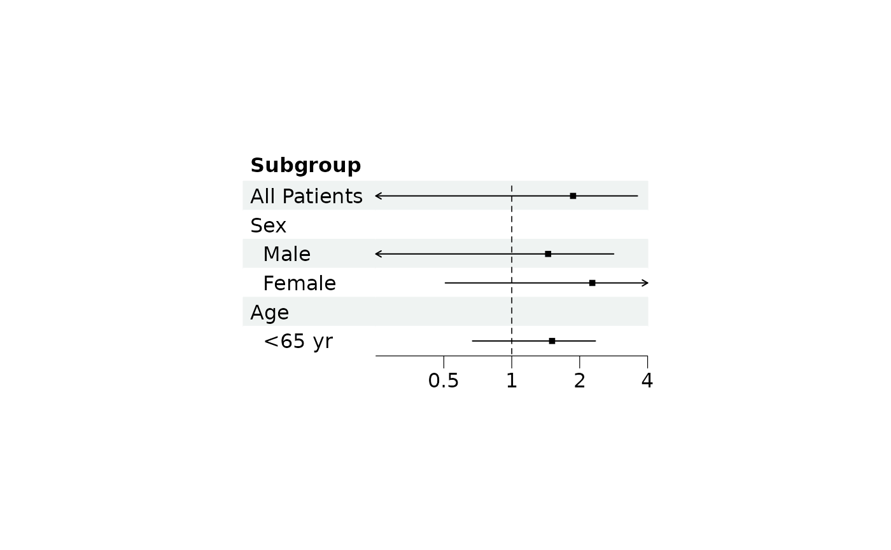

Set the limits, tick marks and scale of the x-axis of the CI columns, and add vertical lines to them.
Arguments
- plot
A forest plot object, see
forest.- xlim
Limits for the x-axis as a vector of length 2, i.e.
c(low, high). By default the minimum and maximum of the lower and upper values are used.- ticks_at
Tick mark positions. By default, ticks are computed automatically:
prettyfor linear axes and a decade-aware helper for log scales (e.g.0.1, 1, 10, 100for a wide log10 range).- ticks_digits
Number of digits for the tick labels. If an integer is given, for example
1L, trailing zeros after the decimal mark are dropped. Give a double, for example1, to keep them. By default the number is calculated from the tick positions. Use a list to mix the two between CI columns, as a vector makes them all double.- ticks_minor
A numeric vector of positions to draw ticks without labels. It can be a superset of
ticks_ator disjoint from it.- x_trans
Scale of the axis, one of
"none"(default),"log","log2"or"log10". Use"log"if the values are exponential, e.g. odds ratios or hazard ratios. The default reference line offorestis 1 for log scales and 0 otherwise.- vline
Numeric vector, positions of vertical lines drawn in addition to the reference line, on the original scale of the x-axis. Their look is set with
vertlineofforest_style. No lines are drawn by default.
Details
Arguments left out keep their current value, so the axis can be set in
several calls, and NULL goes back to the default. A single value
applies to all CI columns. To give the columns different settings, provide
a list with one element for each CI column (a vector for
ticks_digits and x_trans), where NA leaves a column at
its default.
This builds the plot again, so it must be used before the plot is edited
with edit_plot, add_text,
insert_text, add_border or
add_grob.
Examples
library(grid)
# Read provided sample example data
dt <- read.csv(system.file("extdata", "example_data.csv", package = "forestploter"))
dt <- dt[1:6, ]
# Add a blank column for the forest plot to display CI
dt$` ` <- paste(rep(" ", 20), collapse = " ")
p <- forest(dt[, c("Subgroup", " ")],
est = dt$est,
lower = dt$low,
upper = dt$hi,
ci_column = 2,
ref_line = 1)
# Limits and tick marks, with a vertical line at 2
p <- set_xaxis(p, xlim = c(0, 4), ticks_at = c(0.5, 1, 2, 3), vline = 2)
plot(p)
# The axis can be set in several calls, `NULL` goes back to the default
p <- set_xaxis(p, ticks_digits = 1L)
p <- set_xaxis(p, vline = NULL)
# A log scale, where the reference line of `forest()` defaults to 1
plot(set_xaxis(p, x_trans = "log", xlim = c(0.25, 4), ticks_at = c(0.5, 1, 2, 4)))
